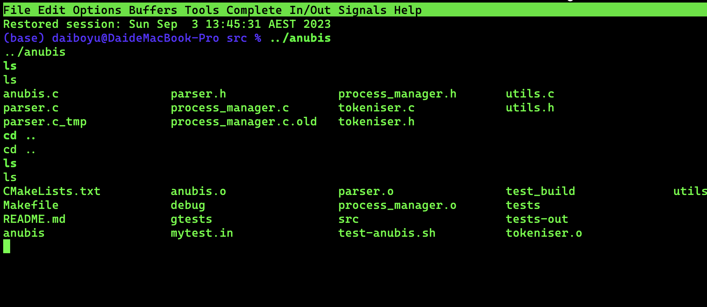
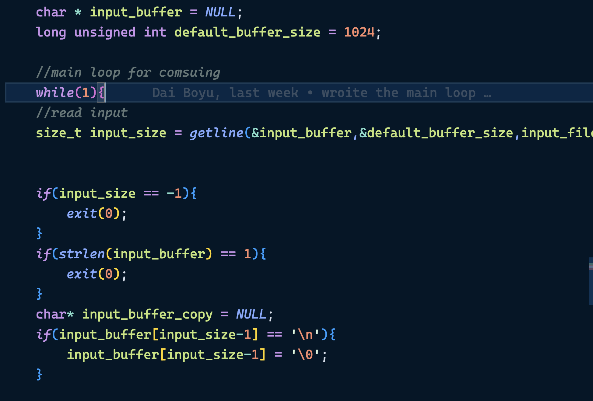
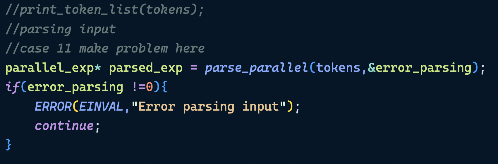
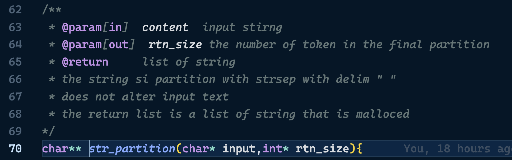
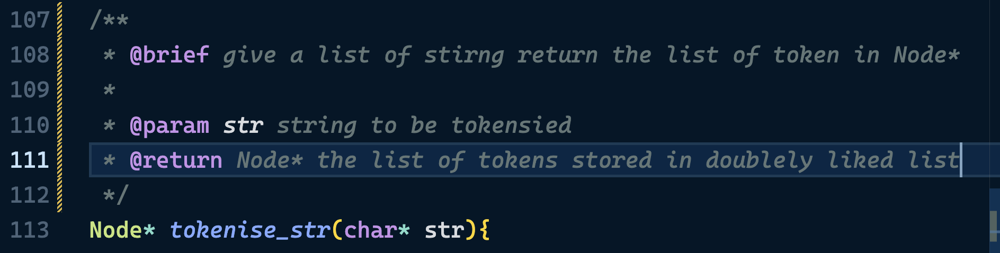
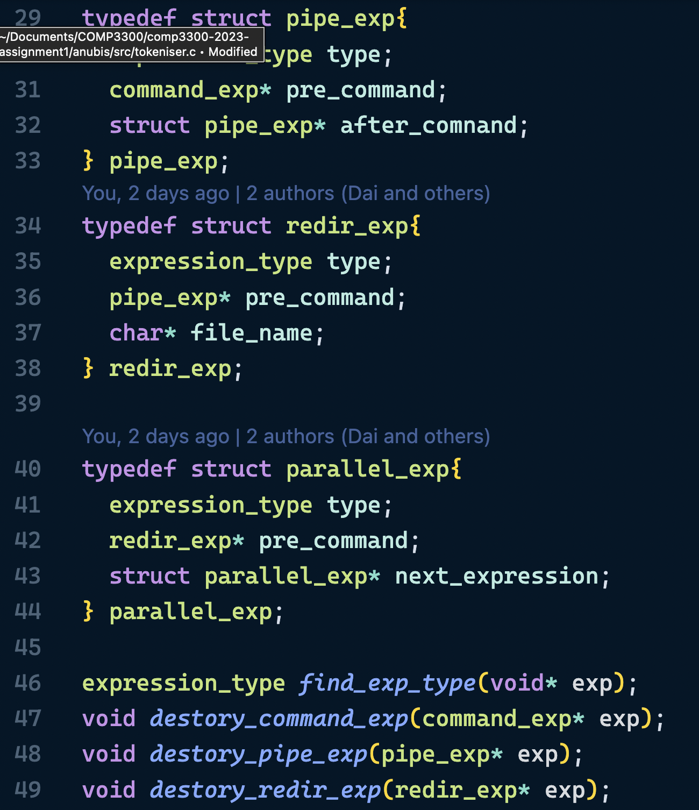

In this assignment, I implemented the Anubis programmes which is an interactive command line program that supports various features that are in a regular Linux terminal/bash.
This report will briefly mention some details about the programme's implementation.
Usage: path <serachfolder> | ...
The path command takes multiple input and sets the search path(where anubis look for executable fields) to the input.
Usage: cd <directory>
Change the working directory of the programme. 
Usage: exit the anubis programme
The program can accept a file containing lines of instruction and execute the commands line by line inside the file

The anubis offers options to the user to run the commands in parallel using the special symbol "&".
cmd1 args1 & cmd2 args2 will allow cmd1 and cmd2 to be executed in parallel(there is no guranteen that cmd2 is going to be executed after cmd1 but due to operation in praparing starting of processes cmd2 is likey to start after cmd1)
The anubis programme allows the user to redirect the stdout of a program to the stdin of another program using "|". For example, "ls | wc" would show the word count of the ls command output.

The number of programs that the usr could chain up does not have a limit. Users could chain up multiple programs using pipe symbols.

Usage: [programme] > [target file]
The anubis program allows the user to redirect the stdout of programs to a file in the file system. If the target file is not found, anubis will create the corresponding file.

A line of command in anubis would follow the following grammar of precedence.
command_exp := name_of_bin and arguments
redir_exp := pipe_exp | pipe_exp > file_name
pipe_exp := command_exp / command_exp | pipe_exp
parallel_exp := redir_exp | redir_exp & parallel_exp
Anubis.c contains the programme's main function and is responsible for setup initial data structures, reading user input, and calling the corresponding function to process the user input.

It initialises the path_list and sets the stdin of the anubis program. This set of input_file allows the anubis to read commands from a file and run in batch mode.

As shown above, the anubis program uses a 'getline()' inside the while loop to consume all the input in the stdin or input file. The program exits when there are no more lines to read, receiving an empty string or EOF symbol
After reading the input line, the anubis program will check for built-in commands and attempt to execute them. (Consider not using the same name as the built-in command as file name/programme name as that would confuse the program.)

After successfully finding the built-in command in the input's first place, commands will be executed with execute_built_in function. The documentation of the execute_built_in is as follows(errors will be handled inside the function).

After checking for built-in commands, the anubis program will view the input as a line of command that needs to be processed. The first step is tokenising the input string.
 For further details about tokenising, please check tokerniser.c
For further details about tokenising, please check tokerniser.c
After the call to tokenise the string, the main would parse the command into an expression that allows precedence between symbols to be processd  For further details about the parsing process, please check parser.c
This file contains code related to the tokenisation of commands and strings.
 The string pattern is the first step of tokenising the string. The str_partition function divides the string by empty spaces and the special symbols so that they can be tokenised into tokens.
 The tokenise_str utilises the partition string function. Construct Token out of the substring and return in Node(which is a linked list defined in utils.c)
As mentioned, the anubis assumes the incoming command is in the form of the below grammar.
command_exp := name_of_bin and arguments
redir_exp := pipe_exp | pipe_exp > file_name
pipe_exp := command_exp / command_exp | pipe_exp
parallel_exp := redir_exp | redir_exp & parallel_exp
Parser.c contains functions and data structures related to parsing a linked list of tokens.

In parsing a command, parse_parallel is executed on the list of input tokens. It will let parse_redir consume tokens until encountering a "&". Parse rider saves the result of parse_redir and, based on the preceding symbole, constructs next parallel_exp.
The parse_redir and parse_pipe adapt similar structure to the parse_paraallel
The process_manager contains functions and data structures related to forking and executing expressions.

Similar to the parse, the execution of the command is also in a hierarchical structure.
Recall that a parallel_exp contains a redir_exp or an optional link to the following parallel_exp. In executing, the process would call fork() for each redir_exp and let the child process call execute_redirection() to execute all commands.